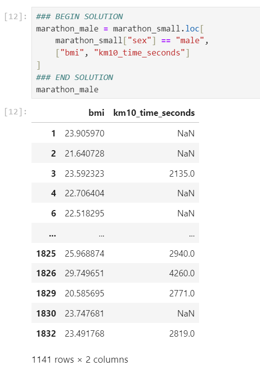

<div class="css-a9o3ew-toggleDetails__content"><span dir="ltr" class="css-wxpmja-view"><div class="user_content enhanced" data-testid="assignments-2-assignment-toggle-details-text"><p><strong>EECS690 Mini-Project 1: Using Pandas and Altair</strong></p>
  <p>Learning objective: In this project, you will learn how to</p>
  <ul>
  <li>Load and explore a dataset using pandas.</li>
  <li>Select and filter data using <code>[]</code> and <code>loc[]</code> and similar constructs</li>
  <li>Perform data transformations by creating new calculated columns</li>
  <li>Visualize data using <code>Altair </code>to identify potential trends</li>
  </ul>
  <p><strong>Problem Statement: Understanding Running Performance</strong></p>
  <p>A group of sports' scientists is analyzing the performance of recreational runners. Their goal is to determine how factors such as age, BMI, and training habits impact race performance. (FYI: The research case study is below the problem description.)</p>
  <p><strong>Dataset</strong>: <a class="inline_disabled" href="./marathon_small.csv" target="_blank"><code>marathon_small.csv</code></a></p>
  <p>Your goal is to explore the relationship between BMI and 10 km race time for male runners.</p>
  <p><strong>Tasks</strong></p>
  <p><strong>Step 1: Load and Explore the Data</strong></p>
  <ul>
  <li>Import the <code>pandas </code>library.</li>
  <li>Read the dataset (<code>csv</code>) into a pandas DataFrame</li>
  <li>Display the top 25 rows to get an overview of the data</li>
  <li>Find the number of rows and columns in the dataset using shape</li>
  <li>See Sample output for more ideas</li>
  </ul>
  <p><strong>Step 2: Subset and Filter Data</strong></p>
  <ul>
  <li>Filter only male runners from the dataset.</li>
  <li>Create a new DataFrame that includes only the columns <code>bmi </code>and <code>km10_time_seconds</code></li>
  </ul>
  <p><strong>Step 3: Transform Data</strong></p>
  <ul>
  <li>Convert 10 km race time from seconds to minutes by dividing <code>km10_time_seconds</code> by 60.</li>
  <li>Store this new column as km10_time_minutes in the dataset.</li>
  </ul>
  <p><strong>Step 4: Visualize the Relationship</strong></p>
  <ul>
  <li>Use Altair to create a scatter plot:</li>
  </ul>
  <p>&nbsp; &nbsp; &nbsp; X-axis: <code>bmi</code><br>&nbsp; &nbsp; &nbsp; Y-axis: <code>km10_time_minutes </code>(ensure proper axis labels for readability)</p>
  <ul>
  <li>Customize the visualization:</li>
  </ul>
  <p>&nbsp; &nbsp; &nbsp; &nbsp;Adjust axis labels (<code>alt.X(), alt.Y()</code>); increase font size for readability using <code>.configure_axis()</code></p>
  <p><strong>Step 5: Interpret the Results</strong></p>
  <p>Based on your visualization, answer the following question: What relationship do you observe between BMI and 10 km race time?</p>
  <p>A: No relationship (BMI does not affect race time).</p>
  <p>B: Positive correlation (Higher BMI → Longer race time).</p>
  <p>C: Negative correlation (Higher BMI → Shorter race time).</p>
  <p><strong>Expected Deliverables</strong></p>
  <p>At the end of this exercise, you should submit Python script or Jupyter Notebook (.<code>py </code>or .<code>ipynb</code>) containing:</p>
  <ul>
  <li>Code for loading, filtering, and transforming data, visualization with Altair</li>
  <li>Comments explaining your code</li>
  </ul>
  <p><strong>Grading Rubric</strong></p>
  <ul>
  <li><span style="color: #e03e2d;">Data loading</span>&nbsp; (correctly loads <code>marathon_small.csv</code>, displays top 25 rows, and prints dataset shape): 5 points</li>
  <li><span style="color: #e03e2d;">Data filtering</span> (correctly filters male runners and selects only <code>bmi </code>and <code>km10_time_seconds</code> columns): 5 points</li>
  <li><span style="color: #e03e2d;">Data transformation</span> (converts <code>km10_time_seconds</code> to <code>km10_time_minutes</code> correctly and stores the new column): 5 points</li>
  <li><span style="color: #e03e2d;">Visualization</span> (scatter plot is correctly created, properly labeled, and formatted for readability): 10 points</li>
  <li><span style="color: #e03e2d;">Result interpretation</span> (chooses the correct relationship A, B, or C, and provides a well-reasoned explanation): 5 points</li>
  <li><span style="color: #e03e2d;">Code readability</span> (code is well-organized, uses appropriate comments, and follows good coding practices): 10 points</li>
  </ul>
  <hr>
  <p><strong>Sample output</strong></p>
  <p><strong></strong></p>
  <p><strong>-----</strong></p>
  <p><strong></strong></p>
  <p><strong>-----</strong></p>
  <p><strong></strong></p>
  <p><strong>-----</strong></p>
  <p></p>
  <p>-----</p>
  <p></p>
  <p>-----</p>
  <p></p>
  <p>-----</p>
  <p></p>
  <hr>
  <p><span style="color: #236fa1;"><strong>Runners Research Case Study</strong></span></p>
  <p><span style="color: #236fa1;">Researchers, Vickers and Vertosick, performed a study in 2016 that aimed to identify what factors had a relationship with race performance of recreational runners so that they could better predict future 5 km, 10 km and marathon race times for individual runners. Such predictions (and knowing what drives these predictions) can help runners by suggesting changes they could make to modifiable factors, such as training, to help them improve race time. Unmodifiable factors that contribute to the prediction, such as age or sex, allow for fair comparisons to be made between different runners.</span></p>
  <p><span style="color: #236fa1;">Vickers and Vertosick reasoned that their study is important because all previous research done to predict races times has focused on data from elite athletes. This biased data set means that the predictions generated from them do not necessarily do a good job predicting race times for recreational runners (whose data was not in the dataset that was used to create the model that generates the predictions). Additionally, previous research focused on reporting/measuring factors that require special expertise or equipment that are not freely available to recreational runners. This means that recreational runners may not be able to put their characteristics/measurements for these factors in the race time prediction models, and so they will not be able to obtain an accurate prediction, or a prediction at all (in the case of some models).</span></p>
  <p><span style="color: #236fa1;">To make a better model, Vickers and Vertosick performed a large survey. They put their survey on the news website <code>Slate.com</code> attached to a news story about race time prediction. They were able to obtain 2,497 responses. The survey included questions that allowed them to collect a data set that included:</span></p>
  <p><span style="color: #236fa1;">age,</span></p>
  <p><span style="color: #236fa1;">sex,</span></p>
  <p><span style="color: #236fa1;">body mass index (BMI),</span></p>
  <p><span style="color: #236fa1;">whether they are an endurance runner or speed demon,</span></p>
  <p><span style="color: #236fa1;">what type of shoes they wear,</span></p>
  <p><span style="color: #236fa1;">what type of training they do,</span></p>
  <p><span style="color: #236fa1;">race time for 2–3 races they completed in the last 6 months,</span></p>
  <p><span style="color: #236fa1;">self-rated fitness for each race, and</span></p>
  <p><span style="color: #236fa1;">race difficulty for each race</span></p>
  <p><span style="color: #236fa1;">Let's now use this data to explore a question we might be interested in - is there a relationship between 10 km race time and body mass index (BMI) for male runners in this data set. This is an exploratory data analysis question because we stated we're looking for a relationship between measurements within the single data set we have and are not interested in yet interpreting beyond it. We can answer this question by visualizing the data as a scatter plot using Python.</span></p>
  <p><span style="color: #236fa1;">If, however, we are not aiming to extend our findings to a broader population, make predictions, analyze cause or mechanics, we would need to state a different data analysis question and follow-up with different analytical methods to answer that question. ...</span></p>
  <p><span style="color: #236fa1;">The data set we are loading is called <code>marathon_small.csv</code> and it contains a subset of the data from the study described above. It is a comma separated file:</span></p>
  <p><span style="color: #236fa1;"><code>age,bmi,km5_time_seconds,km10_time_seconds,sex</code></span><br><span style="color: #236fa1;"><code>25.0,21.6221160888672,NA,2798,female</code></span><br><span style="color: #236fa1;"><code>41.0,23.905969619751,1210.0,NA,male</code></span><br><span style="color: #236fa1;"><code>25.0,21.6407279968262,994.0,NA,male</code></span><br><span style="color: #236fa1;"><code>35.0,23.5923233032227,1075.0,2135,male</code></span><br><span style="color: #236fa1;"><code>34.0,22.7064037322998,1186.0,NA,male</code></span><br><span style="color: #236fa1;"><code>45.0,42.0875434875488,3240.0,NA,female</code></span><br><span style="color: #236fa1;"><code>33.0,22.5182952880859,1292.0,NA,male</code></span><br><span style="color: #236fa1;"><code>58.0,25.2340793609619,NA,3420,male</code></span><br><span style="color: #236fa1;"><code>29.0,24.505407333374,1440.0,3240,male</code></span><br><span style="color: #236fa1;"><code>...</code></span></p>
  <hr>
  <p>Data file: <a class="inline_disabled" href="./marathon_small.csv">marathon_small.csv</a></p>
  <p>&nbsp;</p></div></span></div>